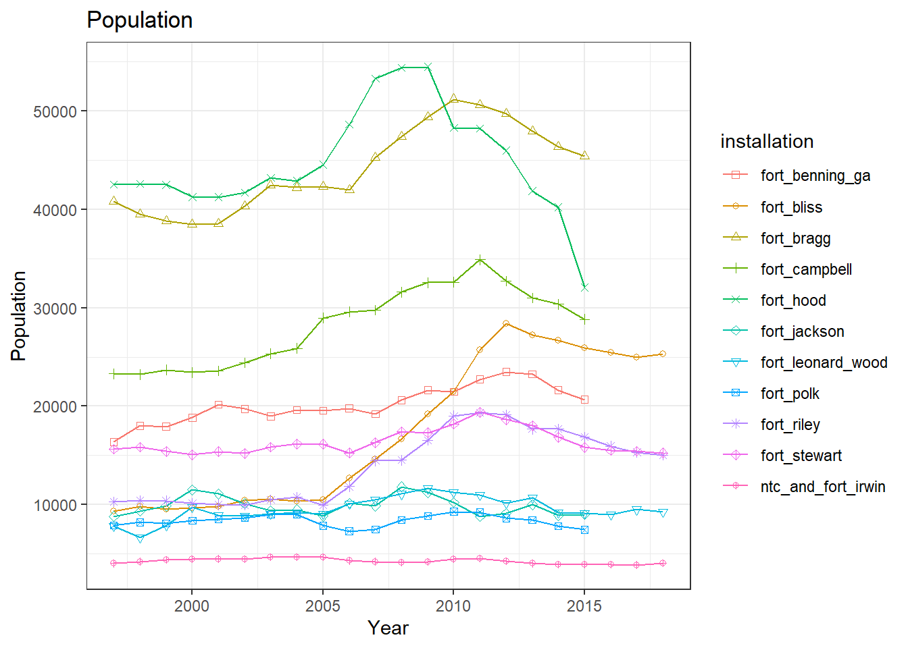
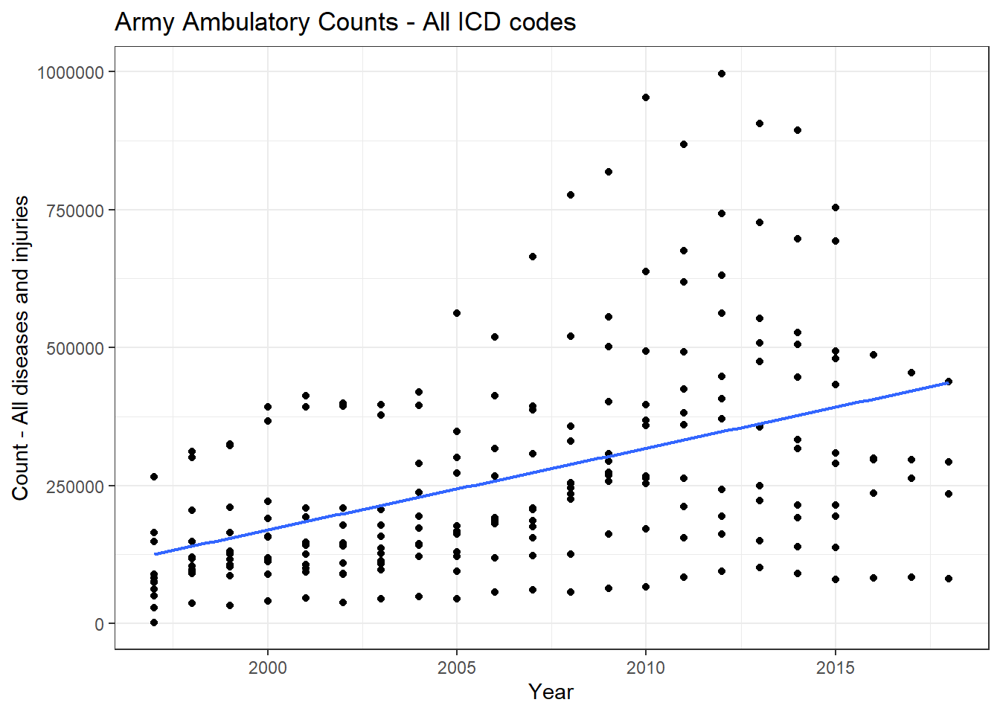
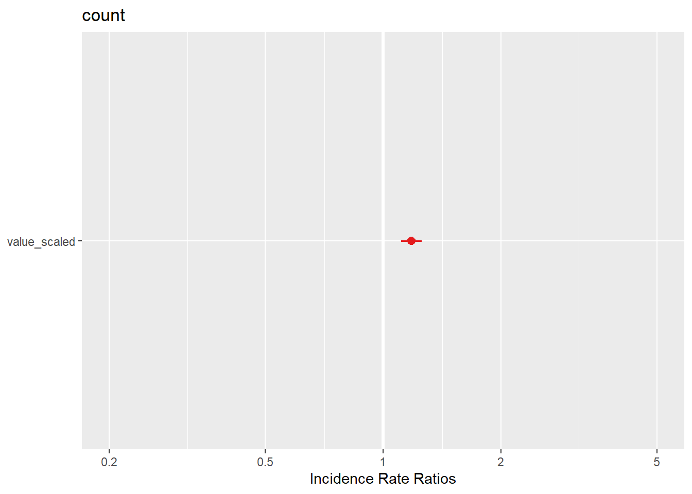

mixed_models_poisson
Annual models from DMED data.
Scope:
CONUS Army Installations:
Fort Jackson, SC
Fort Benning, GA
Fort Bragg, NC
Fort Campbell, KY
Fort Polk, LA
Fort Hood, TX
Fort Stewart, GA
Fort Leonard Wood, MO
Fort Riley, KS
Fort Irwin, CA
Fort Bliss, TX
Population: Active-duty Army service members
Outcome: Ambulatory (Out-patient)
Annual Rate of Heat Stress Illness (any type, primary diagnosis)
1997 - 2018
Exposure indices:
“Absolute” indices
Annual mean (full-year): temperature, heat index, WBGT
Annual heat risk days / hours - Heat index above 80 / 90 / 103 / 125 °F - WBGT above 82 / 85 / 88 / 90 °F
“Relative” indices (averaged over full-year and heat season months) Annual mean daily anomaly: temperature, heat index, WBGT
Annual maximum daily anomaly: temperature, heat index, WBGT
Days mean temperature index above daily climate normal percentile (averaged over all hours of day)
- temperature, heat index, WBGT above 85th / 90th / 95th percentiles
Days maximum temperature index above daily climate normal maximum percentile
- temperature, heat index, WBGT above 85th / 90th / 95th percentiles
Days mean temperature index above Standard Deviation(s) of mean daily temperature climate normal
- temperature, heat index, WBGT above 1 or 2 standard deviations of daily normal
Days maximum temperature index above Standard Deviation(s) of max daily temperature climate normal
- temperature, heat index, WBGT above 1 or 2 standard deviations of maximum daily normal
# Outcomes
dmed_tidy <-
read_rds("data/dmed_tidy.rds")
dmed_tidy## # A tibble: 11,955 x 9
## type category year count population rate location strata hsi
## <fct> <fct> <int> <dbl> <dbl> <dbl> <fct> <fct> <fct>
## 1 Ambulatory Data Male 1997 0 6057. 0 jackson gender hexhsa~
## 2 Ambulatory Data Female 1997 0 2749. 0 jackson gender hexhsa~
## 3 Ambulatory Data Total 1997 0 8806. 0 jackson gender hexhsa~
## 4 Hospitalizatio~ Male 1997 0 6057. 0 jackson gender hexhsa~
## 5 Hospitalizatio~ Female 1997 0 2749. 0 jackson gender hexhsa~
## 6 Hospitalizatio~ Total 1997 0 8806. 0 jackson gender hexhsa~
## 7 Reportable Eve~ Male 1997 0 6057. 0 jackson gender hexhsa~
## 8 Reportable Eve~ Female 1997 0 2749. 0 jackson gender hexhsa~
## 9 Reportable Eve~ Total 1997 0 8806. 0 jackson gender hexhsa~
## 10 Ambulatory Data Male 1998 0 6456. 0 jackson gender hexhsa~
## # ... with 11,945 more rows# Exposures
annual_tables_list <-
read_rds("data/annual_tables_list.rds")
annual_tables_list## # A tibble: 25 x 2
## # Groups: installation [25]
## installation data
## <chr> <list<df[,31]>>
## 1 eglin_afb [86 x 31]
## 2 fort_benning_ga [86 x 31]
## 3 fort_bliss [86 x 31]
## 4 fort_bragg [86 x 31]
## 5 fort_campbell [86 x 31]
## 6 fort_carson [86 x 31]
## 7 fort_drum [86 x 31]
## 8 fort_gordon [86 x 31]
## 9 fort_hood [86 x 31]
## 10 fort_jackson [86 x 31]
## # ... with 15 more rowsdmed_population <-
dmed_tidy %>%
filter(!location %in% c("us", "overseas"),
type == "Ambulatory Data",
hsi == "all",
strata == "gender",
category == "Total") %>%
dplyr::select(location, year, population) %>%
mutate(location = dplyr::recode(location, jackson = "fort_jackson"),
location = dplyr::recode(location, benning = "fort_benning_ga"),
location = dplyr::recode(location, bragg = "fort_bragg"),
location = dplyr::recode(location, campbell = "fort_campbell"),
location = dplyr::recode(location, polk = "fort_polk"),
location = dplyr::recode(location, hood = "fort_hood"),
location = dplyr::recode(location, stewart = "fort_stewart"),
location = dplyr::recode(location, leonardwood = "fort_leonard_wood"),
location = dplyr::recode(location, riley = "fort_riley"),
location = dplyr::recode(location, irwin = "ntc_and_fort_irwin"),
location = dplyr::recode(location, bliss = "fort_bliss"),
location = as.character(location))
index_long <-
annual_tables_list %>%
filter(installation %in% c("fort_benning_ga", "fort_bragg", "fort_campbell", "fort_jackson",
"fort_polk", "fort_hood", "fort_stewart", "fort_leonard_wood", "fort_riley",
"ntc_and_fort_irwin", "fort_bliss")) %>%
unnest(data) %>%
pivot_longer(., cols = `1990`:`2019`, names_to = "year", values_to = "value") %>%
mutate(year = as.integer(year))
hsi_rates <-
dmed_tidy %>%
filter(location %in% c("benning", "bragg", "campbell", "jackson",
"polk", "hood", "stewart", "leonardwood",
"riley", "irwin", "bliss"),
type == "Ambulatory Data",
hsi == "all",
strata == "gender",
category == "Total") %>%
dplyr::select(location, year, rate) %>%
dplyr::mutate(location = dplyr::recode(location, jackson = "fort_jackson"),
location = dplyr::recode(location, benning = "fort_benning_ga"),
location = dplyr::recode(location, bragg = "fort_bragg"),
location = dplyr::recode(location, campbell = "fort_campbell"),
location = dplyr::recode(location, polk = "fort_polk"),
location = dplyr::recode(location, hood = "fort_hood"),
location = dplyr::recode(location, stewart = "fort_stewart"),
location = dplyr::recode(location, leonardwood = "fort_leonard_wood"),
location = dplyr::recode(location, riley = "fort_riley"),
location = dplyr::recode(location, irwin = "ntc_and_fort_irwin"),
location = dplyr::recode(location, bliss = "fort_bliss"),
location = as.character(location))
hsi_counts <-
dmed_tidy %>%
filter(location %in% c("benning", "bragg", "campbell", "jackson",
"polk", "hood", "stewart", "leonardwood",
"riley", "irwin", "bliss"),
type == "Ambulatory Data",
hsi == "all",
strata == "gender",
category == "Total") %>%
dplyr::select(location, year, count, population) %>%
dplyr::mutate(location = dplyr::recode(location, jackson = "fort_jackson"),
location = dplyr::recode(location, benning = "fort_benning_ga"),
location = dplyr::recode(location, bragg = "fort_bragg"),
location = dplyr::recode(location, campbell = "fort_campbell"),
location = dplyr::recode(location, polk = "fort_polk"),
location = dplyr::recode(location, hood = "fort_hood"),
location = dplyr::recode(location, stewart = "fort_stewart"),
location = dplyr::recode(location, leonardwood = "fort_leonard_wood"),
location = dplyr::recode(location, riley = "fort_riley"),
location = dplyr::recode(location, irwin = "ntc_and_fort_irwin"),
location = dplyr::recode(location, bliss = "fort_bliss"),
location = as.character(location))
# Function to assign Basic Combat Training (BCT) category
joined_rate <-
index_long %>%
left_join(hsi_rates, by = c("installation" = "location", "year" = "year")) %>%
drop_na(rate)
joined_rate_pop <-
joined_rate %>%
left_join(dmed_population, by = c("installation" = "location", "year"))
joined_counts <-
index_long %>%
left_join(hsi_counts, by = c("installation" = "location", "year" = "year")) %>%
drop_na(count) %>%
mutate(bct = case_when(installation %in% c("fort_benning_ga", "fort_jackson", "fort_leonard_wood") ~ 1,
!installation %in% c("fort_benning_ga", "fort_jackson", "fort_leonard_wood") ~ 0))Plots of HSI Ambulatory Counts
joined_counts %>%
ggplot(aes(x = year, y = population, color = installation, shape = installation)) +
geom_line() +
geom_point() +
labs(
title = "Population",
y = "Population",
x = "Year"
) +
scale_shape_manual(values = 0:11) +
theme_bw() 
joined_counts %>%
ggplot(aes(x = count)) +
geom_histogram(color = "darkblue", fill = "lightblue") +
facet_wrap(installation ~ .) +
labs(
title = "Army Heat Stress Illness Ambulatory Counts, 1997-2018",
y = "Installation",
x = "HSI count"
) +
theme_bw() ## `stat_bin()` using `bins = 30`. Pick better value with `binwidth`.
Examine single index of heat (out of 80+ indices)
Annual hours WBGT greater than 85 deg F
joined_counts %>%
filter(index %in% "hours_wbgt_gt85") %>%
ggplot(aes(x = year, y = count)) +
geom_point() +
geom_smooth(method = lm, se = FALSE, size = 0.8) +
labs(
title = "Army Heat Stress Illness Ambulatory Counts",
x = "Year",
y = "HSI count"
) +
theme_bw() 
joined_counts %>%
filter(index %in% "hours_wbgt_gt85") %>%
ggplot(aes(x = year, y = count, color = installation, shape = installation)) +
geom_point() +
geom_smooth(method = lm, se = FALSE, size = 0.8) +
labs(
title = "Army Heat Stress Illness Ambulatory Counts",
x = "Year",
y = "HSI count"
) +
theme_bw() ## Warning: The shape palette can deal with a maximum of 6 discrete values because
## more than 6 becomes difficult to discriminate; you have 11. Consider
## specifying shapes manually if you must have them.## Warning: Removed 110 rows containing missing values (geom_point).
joined_counts %>%
filter(index %in% "hours_wbgt_gt85") %>%
ggplot(aes(x = value, y = count, color = installation, shape = installation)) +
geom_point() +
geom_smooth(method = lm, se = FALSE, size = 0.8) +
labs(
title = "Army Heat Stress Illness Ambulatory Counts at 11 Installations (1997-2018)",
x = "Hours WBGT > 85 deg F",
y = "HSI count"
) +
scale_shape_manual(values = 0:11) +
theme_bw() 
joined_counts %>%
filter(index %in% "hours_wbgt_gt85") %>%
ggplot(aes(x = value, y = fct_reorder(installation, value))) +
ggridges::geom_density_ridges(
jittered_points = TRUE,
aes(point_color = installation, point_fill = installation),
alpha = 0.5,
point_alpha = 1) +
labs(
title = "Hours WBGT exceeding 85 deg F, 1997-2018",
y = "Installation",
x = "Hours WBGT > 85"
) +
theme_bw() +
theme(legend.position = "none")## Picking joint bandwidth of 31.8
- Ambulatory HSI rates increased over time.
- WBGT temperatures increased over time.
- Slopes of HSI rate change vary by installation.
- Slopes of WBGT increase are consistent by installation (clusters below 100 hours/year and above 200 hours/year).
- HSI rates increase with the number of hours of WBGT exceeding 85 deg F.
- Slopes of HSI rate increases with hours WBGT > 85 vary by installation (among installations with the highest HSI rates).
Models
# Assign dataset; center and scale predictor value
data_hours_wbgt_gt85_counts <-
joined_counts %>%
filter(index %in% "hours_wbgt_gt85") %>%
mutate(value_scaled = scale(value, center = TRUE, scale = TRUE))# Fitting ‘installation’ as a fixed effect in model M1 assumes
# the 11 ‘installation’ means are all independent of one another,
# and share a common residual variance
pooled <- glm(count ~ value + installation, data = data_hours_wbgt_gt85_counts)
summary(pooled)##
## Call:
## glm(formula = count ~ value + installation, data = data_hours_wbgt_gt85_counts)
##
## Deviance Residuals:
## Min 1Q Median 3Q Max
## -573.43 -35.83 -6.68 42.02 562.77
##
## Coefficients:
## Estimate Std. Error t value Pr(>|t|)
## (Intercept) 227.1550 59.5106 3.817 0.000174 ***
## value 0.6049 0.1082 5.590 6.39e-08 ***
## installationfort_bliss -217.1102 64.1732 -3.383 0.000842 ***
## installationfort_bragg 256.0720 45.4519 5.634 5.12e-08 ***
## installationfort_campbell -48.3634 65.5825 -0.737 0.461604
## installationfort_hood -374.4408 42.4198 -8.827 2.77e-16 ***
## installationfort_jackson -117.4389 49.3075 -2.382 0.018045 *
## installationfort_leonard_wood -178.3547 65.2658 -2.733 0.006769 **
## installationfort_polk -178.4525 63.0099 -2.832 0.005034 **
## installationfort_riley -199.0327 64.7140 -3.076 0.002355 **
## installationfort_stewart -331.3373 46.9620 -7.055 2.01e-11 ***
## installationntc_and_fort_irwin -385.7919 46.9620 -8.215 1.54e-14 ***
## ---
## Signif. codes: 0 '***' 0.001 '**' 0.01 '*' 0.05 '.' 0.1 ' ' 1
##
## (Dispersion parameter for gaussian family taken to be 19401.72)
##
## Null deviance: 15567885 on 241 degrees of freedom
## Residual deviance: 4462396 on 230 degrees of freedom
## AIC: 3089.8
##
## Number of Fisher Scoring iterations: 2pooled_offset <- glm(count ~ value + installation, data = data_hours_wbgt_gt85_counts, offset = log(population))
summary(pooled_offset)##
## Call:
## glm(formula = count ~ value + installation, data = data_hours_wbgt_gt85_counts,
## offset = log(population))
##
## Deviance Residuals:
## Min 1Q Median 3Q Max
## -573.32 -35.64 -6.62 42.06 562.83
##
## Coefficients:
## Estimate Std. Error t value Pr(>|t|)
## (Intercept) 217.2800 59.5001 3.652 0.000322 ***
## value 0.6048 0.1082 5.591 6.38e-08 ***
## installationfort_bliss -216.9093 64.1619 -3.381 0.000850 ***
## installationfort_bragg 255.2695 45.4440 5.617 5.58e-08 ***
## installationfort_campbell -48.7217 65.5711 -0.743 0.458217
## installationfort_hood -375.1997 42.4124 -8.846 2.43e-16 ***
## installationfort_jackson -116.7337 49.2989 -2.368 0.018719 *
## installationfort_leonard_wood -177.6329 65.2543 -2.722 0.006982 **
## installationfort_polk -177.5914 62.9989 -2.819 0.005238 **
## installationfort_riley -198.6647 64.7027 -3.070 0.002395 **
## installationfort_stewart -331.1488 46.9538 -7.053 2.04e-11 ***
## installationntc_and_fort_irwin -384.2574 46.9538 -8.184 1.88e-14 ***
## ---
## Signif. codes: 0 '***' 0.001 '**' 0.01 '*' 0.05 '.' 0.1 ' ' 1
##
## (Dispersion parameter for gaussian family taken to be 19394.93)
##
## Null deviance: 15528925 on 241 degrees of freedom
## Residual deviance: 4460835 on 230 degrees of freedom
## AIC: 3089.7
##
## Number of Fisher Scoring iterations: 2# Fitting installation as a random intercept model in model M2 assumes that the 1 measured
# installation means are only a subset of the realised possibilities drawn from a ‘global’ set of
# population means that follow a Normal distribution with its own mean and variance.
random_intercept <- glmer(count ~ value_scaled + (1|installation), data = data_hours_wbgt_gt85_counts, family = poisson, offset = log(population))
# Fitting random intercepts and slopes allows the slope of a
# predictor to vary based on a separate grouping variable.
poisson_mod <- glm(count ~ value_scaled + installation, data = data_hours_wbgt_gt85_counts, family = poisson)
sjPlot::tab_model(poisson_mod, p.val = "kr", show.df = TRUE)| count | |||
|---|---|---|---|
| Predictors | Incidence Rate Ratios | CI | p |
| (Intercept) | 504.53 | 495.25 – 513.92 | <0.001 |
| value_scaled | 1.23 | 1.22 – 1.24 | <0.001 |
| installation [fort_bliss] | 0.05 | 0.05 – 0.06 | <0.001 |
| installation [fort_bragg] | 1.31 | 1.28 – 1.34 | <0.001 |
|
installation [fort_campbell] |
0.36 | 0.35 – 0.37 | <0.001 |
| installation [fort_hood] | 0.21 | 0.20 – 0.22 | <0.001 |
|
installation [fort_jackson] |
0.49 | 0.48 – 0.51 | <0.001 |
|
installation [fort_leonard_wood] |
0.11 | 0.11 – 0.12 | <0.001 |
| installation [fort_polk] | 0.14 | 0.14 – 0.15 | <0.001 |
| installation [fort_riley] | 0.08 | 0.07 – 0.09 | <0.001 |
|
installation [fort_stewart] |
0.13 | 0.12 – 0.14 | <0.001 |
|
installation [ntc_and_fort_irwin] |
0.02 | 0.02 – 0.03 | <0.001 |
| Observations | 242 | ||
| R2 Nagelkerke | 1.000 | ||
poisson_mod_offset <- glm(count ~ value_scaled + installation, data = data_hours_wbgt_gt85_counts, family = poisson, offset = log(population))
sjPlot::tab_model(poisson_mod, poisson_mod_offset, p.val = "kr", show.df = TRUE)| count | count | |||||
|---|---|---|---|---|---|---|
| Predictors | Incidence Rate Ratios | CI | p | Incidence Rate Ratios | CI | p |
| (Intercept) | 504.53 | 495.25 – 513.92 | <0.001 | 0.03 | 0.02 – 0.03 | <0.001 |
| value_scaled | 1.23 | 1.22 – 1.24 | <0.001 | 1.21 | 1.20 – 1.22 | <0.001 |
| installation [fort_bliss] | 0.05 | 0.05 – 0.06 | <0.001 | 0.06 | 0.05 – 0.06 | <0.001 |
| installation [fort_bragg] | 1.31 | 1.28 – 1.34 | <0.001 | 0.59 | 0.57 – 0.60 | <0.001 |
|
installation [fort_campbell] |
0.36 | 0.35 – 0.37 | <0.001 | 0.26 | 0.25 – 0.26 | <0.001 |
| installation [fort_hood] | 0.21 | 0.20 – 0.22 | <0.001 | 0.10 | 0.09 – 0.10 | <0.001 |
|
installation [fort_jackson] |
0.49 | 0.48 – 0.51 | <0.001 | 1.01 | 0.98 – 1.04 | 0.497 |
|
installation [fort_leonard_wood] |
0.11 | 0.11 – 0.12 | <0.001 | 0.24 | 0.22 – 0.25 | <0.001 |
| installation [fort_polk] | 0.14 | 0.14 – 0.15 | <0.001 | 0.35 | 0.33 – 0.37 | <0.001 |
| installation [fort_riley] | 0.08 | 0.07 – 0.09 | <0.001 | 0.11 | 0.11 – 0.12 | <0.001 |
|
installation [fort_stewart] |
0.13 | 0.12 – 0.14 | <0.001 | 0.16 | 0.15 – 0.17 | <0.001 |
|
installation [ntc_and_fort_irwin] |
0.02 | 0.02 – 0.03 | <0.001 | 0.11 | 0.10 – 0.13 | <0.001 |
| Observations | 242 | 242 | ||||
| R2 Nagelkerke | 1.000 | 1.000 | ||||
random_intercept_slope <- glmer(count ~ value_scaled + (1 + value_scaled|installation), data = data_hours_wbgt_gt85_counts, family = poisson, offset = log(population))
random_intercept_slope_bct <- glmer(count ~ value_scaled + bct + (1 + value_scaled|installation), data = data_hours_wbgt_gt85_counts, family = poisson, offset = log(population))
summary(random_intercept_slope)## Generalized linear mixed model fit by maximum likelihood (Laplace
## Approximation) [glmerMod]
## Family: poisson ( log )
## Formula: count ~ value_scaled + (1 + value_scaled | installation)
## Data: data_hours_wbgt_gt85_counts
## Offset: log(population)
##
## AIC BIC logLik deviance df.resid
## 13315.3 13332.8 -6652.7 13305.3 237
##
## Scaled residuals:
## Min 1Q Median 3Q Max
## -20.8693 -3.5040 -0.5983 3.0067 29.6118
##
## Random effects:
## Groups Name Variance Std.Dev. Corr
## installation (Intercept) 0.79939 0.8941
## value_scaled 0.01221 0.1105 0.69
## Number of obs: 242, groups: installation, 11
##
## Fixed effects:
## Estimate Std. Error z value Pr(>|z|)
## (Intercept) -5.10465 0.26973 -18.925 < 2e-16 ***
## value_scaled 0.14545 0.03437 4.231 2.32e-05 ***
## ---
## Signif. codes: 0 '***' 0.001 '**' 0.01 '*' 0.05 '.' 0.1 ' ' 1
##
## Correlation of Fixed Effects:
## (Intr)
## value_scald 0.666sjPlot::tab_model(random_intercept_slope, p.val = "kr", show.df = TRUE)## Warning: mu of 0.0 is too close to zero, estimate of random effect variances may be unreliable.| count | |||
|---|---|---|---|
| Predictors | Incidence Rate Ratios | CI | p |
| (Intercept) | 0.01 | 0.00 – 0.01 | <0.001 |
| value_scaled | 1.16 | 1.08 – 1.24 | <0.001 |
| Random Effects | |||
| σ2 | 5.88 | ||
| τ00 installation | 0.80 | ||
| τ11 installation.value_scaled | 0.01 | ||
| ρ01 installation | 0.69 | ||
| ICC | 0.12 | ||
| N installation | 11 | ||
| Observations | 242 | ||
| Marginal R2 / Conditional R2 | 0.003 / 0.124 | ||
random_intercept_slope_no_offset <- glmer(count ~ value_scaled + (1 + value_scaled|installation), data = data_hours_wbgt_gt85_counts, family = poisson)
summary(random_intercept_slope_no_offset)## Generalized linear mixed model fit by maximum likelihood (Laplace
## Approximation) [glmerMod]
## Family: poisson ( log )
## Formula: count ~ value_scaled + (1 + value_scaled | installation)
## Data: data_hours_wbgt_gt85_counts
##
## AIC BIC logLik deviance df.resid
## 14258.0 14275.5 -7124.0 14248.0 237
##
## Scaled residuals:
## Min 1Q Median 3Q Max
## -21.793 -3.720 -0.484 3.099 27.347
##
## Random effects:
## Groups Name Variance Std.Dev. Corr
## installation (Intercept) 1.346401 1.16035
## value_scaled 0.009717 0.09858 0.36
## Number of obs: 242, groups: installation, 11
##
## Fixed effects:
## Estimate Std. Error z value Pr(>|z|)
## (Intercept) 4.55250 0.34997 13.008 < 2e-16 ***
## value_scaled 0.16511 0.03097 5.332 9.71e-08 ***
## ---
## Signif. codes: 0 '***' 0.001 '**' 0.01 '*' 0.05 '.' 0.1 ' ' 1
##
## Correlation of Fixed Effects:
## (Intr)
## value_scald 0.341sjPlot::tab_model(random_intercept_slope_no_offset, p.val = "kr", show.df = TRUE)| count | |||
|---|---|---|---|
| Predictors | Incidence Rate Ratios | CI | p |
| (Intercept) | 94.87 | 47.78 – 188.37 | <0.001 |
| value_scaled | 1.18 | 1.11 – 1.25 | <0.001 |
| Random Effects | |||
| σ2 | 0.02 | ||
| τ00 installation | 1.35 | ||
| τ11 installation.value_scaled | 0.01 | ||
| ρ01 installation | 0.36 | ||
| ICC | 0.98 | ||
| N installation | 11 | ||
| Observations | 242 | ||
| Marginal R2 / Conditional R2 | 0.019 / 0.985 | ||
Model Evaluation
sjPlot::tab_model(random_intercept_slope, random_intercept_slope_bct, p.val = "kr", show.df = TRUE)## Warning: mu of 0.0 is too close to zero, estimate of random effect variances may be unreliable.
## Warning: mu of 0.0 is too close to zero, estimate of random effect variances may be unreliable.| count | count | |||||
|---|---|---|---|---|---|---|
| Predictors | Incidence Rate Ratios | CI | p | Incidence Rate Ratios | CI | p |
| (Intercept) | 0.01 | 0.00 – 0.01 | <0.001 | 0.01 | 0.00 – 0.01 | <0.001 |
| value_scaled | 1.16 | 1.08 – 1.24 | <0.001 | 1.16 | 1.08 – 1.24 | <0.001 |
| bct | 2.02 | 0.68 – 5.96 | 0.204 | |||
| Random Effects | ||||||
| σ2 | 5.88 | 5.88 | ||||
| τ00 | 0.80 installation | 0.54 installation | ||||
| τ11 | 0.01 installation.value_scaled | 0.01 installation.value_scaled | ||||
| ρ01 | 0.69 installation | 0.55 installation | ||||
| ICC | 0.12 | 0.09 | ||||
| N | 11 installation | 11 installation | ||||
| Observations | 242 | 242 | ||||
| Marginal R2 / Conditional R2 | 0.003 / 0.124 | 0.018 / 0.103 | ||||
sjPlot::tab_model(random_intercept_slope_no_offset, p.val = "kr", show.df = TRUE)| count | |||
|---|---|---|---|
| Predictors | Incidence Rate Ratios | CI | p |
| (Intercept) | 94.87 | 47.78 – 188.37 | <0.001 |
| value_scaled | 1.18 | 1.11 – 1.25 | <0.001 |
| Random Effects | |||
| σ2 | 0.02 | ||
| τ00 installation | 1.35 | ||
| τ11 installation.value_scaled | 0.01 | ||
| ρ01 installation | 0.36 | ||
| ICC | 0.98 | ||
| N installation | 11 | ||
| Observations | 242 | ||
| Marginal R2 / Conditional R2 | 0.019 / 0.985 | ||
broom::glance(random_intercept_slope)## # A tibble: 1 x 6
## sigma logLik AIC BIC deviance df.residual
## <dbl> <dbl> <dbl> <dbl> <dbl> <int>
## 1 1 -6653. 13315. 13333. 11676. 237broom::glance(random_intercept_slope_bct)## # A tibble: 1 x 6
## sigma logLik AIC BIC deviance df.residual
## <dbl> <dbl> <dbl> <dbl> <dbl> <int>
## 1 1 -6652. 13316. 13337. 11676. 236broom::tidy(random_intercept_slope)## Warning in bind_rows_(x, .id): binding factor and character vector, coercing
## into character vector## Warning in bind_rows_(x, .id): binding character and factor vector, coercing
## into character vector## # A tibble: 5 x 6
## term estimate std.error statistic p.value group
## <chr> <dbl> <dbl> <dbl> <dbl> <chr>
## 1 (Intercept) -5.10 0.270 -18.9 7.10e-80 fixed
## 2 value_scaled 0.145 0.0344 4.23 2.32e- 5 fixed
## 3 sd_(Intercept).installation 0.894 NA NA NA installa~
## 4 sd_value_scaled.installation 0.111 NA NA NA installa~
## 5 cor_(Intercept).value_scaled~ 0.688 NA NA NA installa~broom::tidy(random_intercept_slope_bct)## Warning in bind_rows_(x, .id): binding factor and character vector, coercing
## into character vector
## Warning in bind_rows_(x, .id): binding character and factor vector, coercing
## into character vector## # A tibble: 6 x 6
## term estimate std.error statistic p.value group
## <chr> <dbl> <dbl> <dbl> <dbl> <chr>
## 1 (Intercept) -5.30 0.269 -19.7 1.84e-86 fixed
## 2 value_scaled 0.147 0.0344 4.26 2.01e- 5 fixed
## 3 bct 0.702 0.552 1.27 2.04e- 1 fixed
## 4 sd_(Intercept).installation 0.737 NA NA NA installa~
## 5 sd_value_scaled.installation 0.110 NA NA NA installa~
## 6 cor_(Intercept).value_scaled~ 0.552 NA NA NA installa~Plot models
# Mod 1
plot(random_intercept_slope)sjPlot::plot_model(random_intercept_slope)sjPlot::plot_model(random_intercept_slope, type = "pred", terms = "value_scaled")sjPlot::plot_model(random_intercept_slope, type = "re", terms = "value_scaled")sjPlot::plot_model(random_intercept_slope, type = "resid", terms = "value_scaled")sjPlot::plot_model(random_intercept_slope, type = "diag", terms = "value_scaled")## $installationsjPlot::plot_model(random_intercept_slope_no_offset)
sjPlot::plot_model(random_intercept_slope_no_offset, type = "pred", terms = "value_scaled")sjPlot::plot_model(random_intercept_slope_no_offset, type = "re", terms = "value_scaled")sjPlot::plot_model(poisson_mod)sjPlot::plot_model(poisson_mod_offset)sjPlot::plot_model(random_intercept_slope_bct)sjPlot::plot_model(random_intercept_slope_bct, type = "pred", terms = "value_scaled")sjPlot::plot_model(random_intercept_slope_bct, type = "re", terms = "value_scaled")Multiple Models Function
# center and scale by each index (pooled over all installations)
joined_counts_scaled <-
joined_counts %>%
ungroup() %>%
dplyr::group_by(index) %>%
mutate(value_scaled = scale(value, center = TRUE, scale = TRUE)) %>%
ungroup()
gg_miss_var(joined_counts_scaled)
gg_miss_var(joined_counts_scaled,
facet = index)
# missing values for indices gt 125 deg
joined_counts_scaled <-
joined_counts_scaled %>%
na.omit()
joined_counts_scaled
random_slope_bct_function = function(df) {
df %>%
glmer(count ~ value_scaled + bct + (1 + value_scaled|installation), data = ., family = poisson, offset = log(population))
}
random_slope_bct_nest <-
joined_counts_scaled %>%
dplyr::select(index, everything()) %>%
nest(data = installation:value_scaled) %>%
mutate(glmer_models = map(data, random_slope_bct_function),
glance = map(glmer_models, broom::glance),
tidy = map(glmer_models, broom::tidy),
augment = map(glmer_models, broom::augment),
tab_mod = map(glmer_models, sjPlot::tab_model(p.val = "kr", show.df = TRUE)),
plot_mod = map(glmer_models, sjPlot::plot_model),
plot_re = map(glmer_models, sjPlot::plot_model(type = "re", terms = "value_scaled")))
random_slope_bct_nest
# Model summaries
random_intercepts_nest %>%
unnest(tidy, .drop = TRUE) %>%
dplyr::select(index, term:group) %>%
knitr::kable(digits = 4) %>%
kable_styling(bootstrap_options = "striped", font_size = 10) %>%
scroll_box(height = "400px")